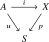
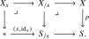
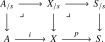
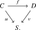
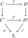
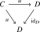

Weak homotopy equivalences are the absolute shadow of covariant and contravariant equivalences. Over the terminal category, left and right fibrations are both precisely animae, so the two notions agree and are detected by geometric realization. The main result of this section is a relative form of Quillen’s theorem A: a functor over \(S\) is a covariant equivalence precisely when it is a weak homotopy equivalence on every relative slice.
Definition 9.5.1. A functor \(f\colon C \to B\) is called a weak homotopy equivalence if it is a covariant equivalence over \(*\). A category \(C\) is called weakly contractible if the functor \(p_C\colon C \to *\) is a weak homotopy equivalence.
Lemma 9.5.2. For a functor \(f\colon C \to B\), the following are equivalent:
(1) The functor \(f\) is a weak homotopy equivalence.
(2) For every anima \(X\), the induced map \[ \Map(B,X) \to \Map(C,X) \] is an equivalence.
(3) The induced map \(\Pi_{\infty}(f)\colon \Pi_{\infty}(C) \to \Pi_{\infty}(B)\) is an equivalence.
Proof
The equivalence between (1) and (2) is immediate, since by Proposition 4.2.4 a functor \(X \to *\) is a left fibration if and only if \(X\) is an anima. By Lemma 3.4.3, condition (2) is equivalent to requiring that \(f\) induce an equivalence \[ \Map(\Pi_{\infty}(B), X) \iso \Map(\Pi_{\infty}(C), X) \] for every anima \(X\). This is equivalent to (3) by Proposition 1.4.11.
Corollary 9.5.3. A category \(C\) is weakly contractible if and only if its geometric realization \(\Pi_{\infty}(C)\) is contractible.
Example 9.5.4. Any initial (or terminal) functor is a weak homotopy equivalence.
The comparison between fibers and relative slices is where the proper and smooth functors from the preceding section enter. Smoothness preserves the initial map into a left-fibration replacement, while properness identifies the fiber with the corresponding slice up to weak homotopy equivalence.
Lemma 9.5.5. Consider a commutative triangle of the form

Proof
Consider the following pullback diagram:
 
Proposition 9.5.6 (Relative Quillen theorem A). Consider a commutative triangle

Proof
The first step is to construct a commutative diagram of the form

Finally, Lemma 9.5.5 gives weak homotopy equivalences \[ C_{/x}\to C'_{/x}\leftarrow C'_x \qquad\text{and}\qquad D_{/x}\to D'_{/x}\leftarrow D'_x. \] Thus \(C_{/x}\to D_{/x}\) is a weak homotopy equivalence if and only if \(C'_x\to D'_x\) is a weak homotopy equivalence. Since \(C'_x\) and \(D'_x\) are animae, the latter is equivalent to \(C'_x\to D'_x\) being an equivalence. This proves the claim.
Corollary 9.5.7. A functor \(u\colon C \to D\) is initial if and only if, for every object \(d\) of \(D\), the relative slice \(C_{/d}\) is weakly contractible. Dually, \(u\) is terminal if and only if every relative coslice \(C_{d/}\) is weakly contractible.
Proof
The functor \(u\) is initial if and only if the diagram

Corollary 9.5.8 (Quillen’s theorem A). Let \(f\colon C \to D\) be a functor such that the relative slice \(C_{/d}\) is weakly contractible for any object \(d\) of \(D\). Then \(f\) is a weak homotopy equivalence.
Proof
The preceding corollary shows that \(f\) is initial, and every initial functor is a weak homotopy equivalence by Example 9.5.4.